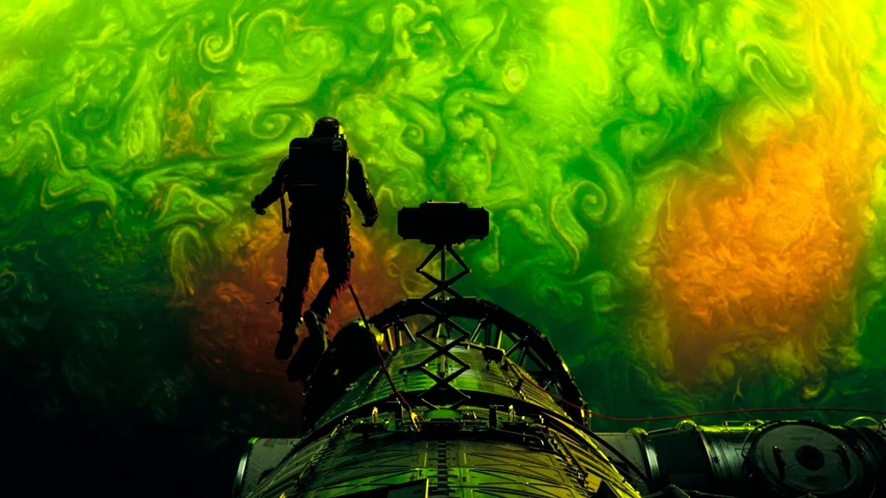

Devoradores de Estrela
Devoradores de Estrelas mistura ficção científica, isolamento e sobrevivência de um jeito muito envolvente. É incrível como consegue equilibrar tensão, emoção e até humor ao mesmo tempo. A beleza do filme não está só no visual, mas também na forma profunda como ele mexe com quem assiste.
Conferir destaque